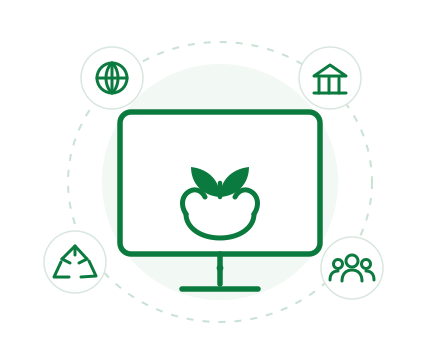

Promover
Incentivar contratações públicas sustentáveis que gerem impacto positivo para a sociedade e para o meio ambiente.
A Plataforma Estadual de Sustentabilidade em Contratações Públicas tem como objetivo promover contratações públicas sustentáveis e responsáveis no âmbito do Estado de São Paulo.

Incentivar contratações públicas sustentáveis que gerem impacto positivo para a sociedade e para o meio ambiente.
Facilitar o acesso a critérios, orientações e boas práticas para apoiar gestores públicos em suas decisões.
Fortalecer a transparência e a governança na gestão dos recursos públicos.
Contribuir para o desenvolvimento sustentável do Estado de São Paulo alinhado aos Objetivos de Desenvolvimento Sustentável (ODS).
Esta plataforma foi desenvolvida com base em boas práticas, publicações e orientações de instituições e especialistas que são referência em contratações públicas sustentáveis.
Diretrizes e orientações sobre contratações públicas sustentáveis no âmbito federal.
Saiba mais sobre a AGUOrientações jurídicas e boas práticas para incorporar sustentabilidade às contratações públicas do Estado de São Paulo.
Ver Cartilha de Contratações SustentáveisBoas práticas, fiscalizações e recomendações voltadas à gestão eficiente dos recursos públicos estaduais.
Ver Manual de Gestão SustentávelReferência nacional em licitações e contratos administrativos, inovação e sustentabilidade. Suas publicações e orientações inspiram o desenvolvimento desta plataforma.
Conhecer publicaçõesDúvidas ou sugestões? Fale com nossa equipe.
sustentabilidade-contratacoes@sp.gov.br
Envie sua mensagem para nossa equipe.
(11) 3775-0000 | Ramal: 1234
Segunda a sexta-feira, das 9h às 18h.
Av. Zaki Narchi, 536
Carandiru – São Paulo/SP
CEP: 02029-000
Acreditamos que cada contratação pública é uma oportunidade de gerar valor para as pessoas, para a sociedade e para o planeta.